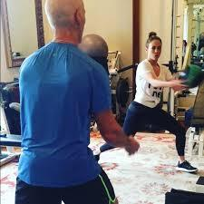
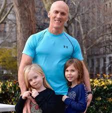
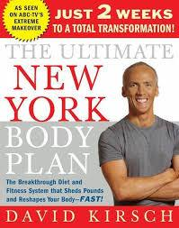
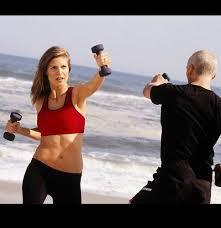
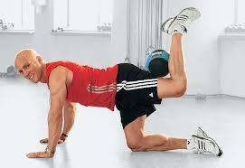
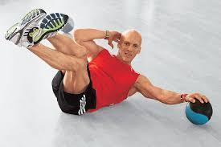

Celebrity Trainer David Kirsch

Had the amazing pleasure to meet David at a Speaker Training I co-hosted in Las Vegas — he blew me away with his insight, talent, and heart! No wonder A-List celebrity flock to him and RAVE about his training!
about David – David Kirsch is a wellness visionary with over two decades of experience in uncovering the connection between mind, body, and spirit. Founder of the award-winning Madison Square Club in New York City, David has trained a number of A-listers including Jennifer Lopez, Heidi Klum, Kate Upton, Kerry Washington, and Anne Hathaway.
David is also the author of five books, including the bestseller The Ultimate New York Body Plan, and has appeared on numerous television shows, such as The Today Show, E!, CNN World News, Dr. Oz, Live with Regis and Kelly, and The View. David’s philosophy—“Sound Mind, Sound Body”—transcends fitness to encompass wellness as a whole.Whether you want to lose weight or body fat, energize and/or just maintain the highest level of wellness, my products – portable and transportable – will deliver the results you want and help you attain the body and lifestyle you thrive to have.






“LET’S GET KIRSCHED!” -DK
With over two decades of experience uncovering and harnessing the powerful connection between mind, body and spirit, David Kirsch has become a leading authority on achieving optimal health and well-being at any age or fitness level. An early proponent of tapping the power of the mind to sculpt the body, David is a true visionary in the field of wellness. Throughout his years as a sought-after trainer, David has transformed the bodies—and lives—of countless devotees through his signature combination of mind-body conditioning, multi-tasking workouts, and smart nutrition. From founding New York’s award-winning Madison Square Club to developing unprecedented supplements, classes, and techniques designed to maximize workouts, David has been a pioneer in the wellness field throughout his long career.
David’s holistic approach to wellness, encompassing a disciplined exercise, nutrition and supplements regimen, is rooted in his philosophy of “Sound Mind, Sound Body” – achieving harmony of mind, body and spirit. Trusted by some of the world’s most visible celebrities and influencers, David is the man with whom many A-listers train when they need to get in shape fast. One of the unique aspects of training with David, is his expertise in reading different body types and his ability to target different parts of the body. His workouts are customized and not “cookie cutter” in any way. Whether you are pear shaped and carry your weight in your hips, thighs and butt; apple shaped – carrying your weight in your upper body and arms; or an orange and need to shape and tone all over, David delivers lasting results.
His philosophy is predicated on not just losing pounds, but burning and losing body fat. More than just a quick fix, his programs are Life Transformative. In addition to authoring five books, and five fitness DVDs, including the bestseller The Ultimate New York Body Plan and the best-selling accompanying DVD, David has appeared on numerous television shows to share his fitness and wellness expertise, including The Today Show, E! and CNN World News, Dr. Oz, Live with Regis and Kelly and The View. Through his books, fitness DVDs, recipes, supplements and more, David Kirsch offers every man and woman access to the wellness regimen he has developed for some of the world’s most discerning clients. Additionally, as a single father of four year old twin girls, he has expanded his wellness empire to include areas such as family and child fitness, nutrition and wellness. His website, DavidKirschWellness.com, represents a passport to the complete David Kirsch lifestyle, with expert tips, supplements, workout gear and more.